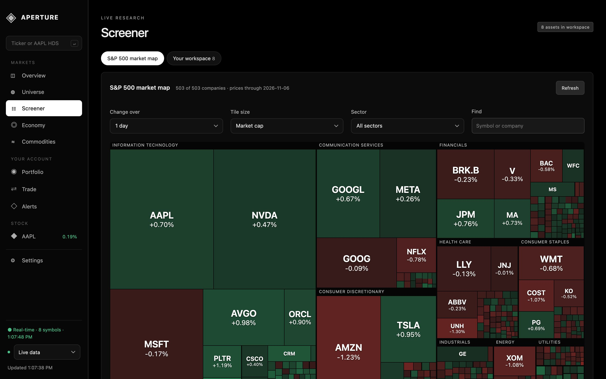

HDSHolders
Every fund with a disclosed position from SEC 13F filings: shares, what it bought or sold last quarter, and how much of its portfolio the stock is. Plus 5%+ owners, insiders, options and ownership history.
OWNOwnership changes
One dated feed of the largest fund moves, 5%+ owner filings and insider open-market buys and sales, with a link to every filing.
DCFValuation
A five-year discounted cash flow pre-filled from the company's own SEC filings: cash flow, capital spending, debt, cash and shares, each labelled with its source.
TASTime & sales
Every trade print as it happens, with VWAP, volume and a buy/sell estimate. When the market's closed, the last session's trades.
SPLCSuppliers & customers
A relationship graph traced from annual reports, with the sentence and filing behind every link.
DESDescription
Profile, key statistics calculated from the live price and latest statements, risk metrics, earnings against estimates, and your own research notes.
FAFinancials
Annual and quarterly income statement, balance sheet and cash flow, plus revenue history from SEC filings.
GP · CN · CFChart, news, filings
Candles with moving averages and comparisons, the week's company news, and recent 10-K, 10-Q and 8-K filings.

The S&P 500 on one map
The Screener opens on every S&P 500 company, grouped by sector, sized by market cap and coloured by the move over a day, week, month, quarter, year to date or year. Click any company to open its page.
- Market cap from price × shares outstanding in SEC filings
- Top gainers and losers for the chosen horizon
- Built in the background and saved, so it opens instantly